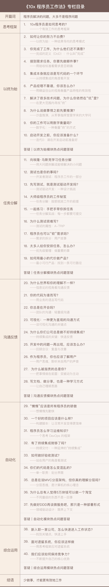

你好！我是郑晔，一个程序员。
很多人都说，程序员很辛苦，与这个角色联系在一起的词儿，通常是忙碌、加班、熬夜等。
作为程序员，我们将其看作一个值得全情投入的职业，希望能够把精力放在设计算法、改进设计、优化系统这些具有创造性与成就感的本职工作上。
但现实情况却是，许多人因为一些“意外”，陷入了无休止的忙碌，比如：
诸如此类，不胜枚举。我们很辛苦，但耗费我们大量时间和精力去应付的工作，并不是技术工作，反而是这些看似很“不值当”的事儿。
为什么会这样？
软件行业里有一本名著叫《人月神话》，其中提到两个非常重要的概念：本质复杂度（Essential Complexity）和偶然复杂度（Accident Complexity）。
简单来说，本质复杂度就是解决一个问题时，无论怎么做都必须要做的事，而偶然复杂度是因为选用的做事方法不当，而导致要多做的事。
比如你要做一个网站，网站的内容是你无论如何都要写的，这就是“本质复杂度”。而如果今天你还在用汇编写一个网站，效率是不可能高起来的，因为你选错了工具。这类选错方法或工具而引发的问题就是“偶然复杂度”。
作为一个在软件行业奋斗了近二十年的程序员，我深刻意识到一个遗憾的事实：大部分程序员忙碌解决的问题，都不是程序问题，而是由偶然复杂度导致的问题。
换句话说，只要选择了正确的做事方法，减少偶然复杂度带来的工作量，软件开发是可以有条不紊进行的。
如何减少偶然复杂度引发的问题，让软件开发工作有序、高效地进行，这正是我希望通过这个专栏帮你解决的问题。
许多人工作做事主要依靠直觉，在这个科学越发昌明的时代，我们清楚地看到，人类的直觉常常是错的，就像古人凭直觉认为大地是平的一样。
软件开发也不例外，如果你不曾在做软件这件事上有过学习和思考，形成一套高效的工作方法，只是凭直觉行事，在真实世界中往往会举步维艰。
幸运的是，总会有不同的人在不同的方向上探索不同的做法，一旦通过真实世界的验证，就会沉淀出可供行业直接应用的最佳实践（Best Practice）。
在软件行业中，这样能够提升工作效率的最佳实践已经有很多，但是，学习掌握这些最佳实践是有难度的，其根源就在于，很难找到这些实践彼此间的内在联系。
直觉大多是错误的，最佳实践又多而琐碎，所以在这个专栏中，我会尝试给你提供一个思考框架，帮你在遇到问题时梳理自己真正要做的事情。围绕着这个框架，我还会给你一些原则。
这些原则，是我从软件行业的诸多软件开发最佳实践中总结出来的，也是我如今在工作中所坚持的。这些原则就是一条主线，将各种最佳实践贯穿起来。
这些原则不多，总结起来就四个：
也许看到这四个原则的名字，你会不以为然，这些说法你在很多地方都看到过，但我想与你分享的内容可能与你想的并不完全一致。
比如：你以为的“终”可能不是终，因为你只是站在自己的角度；你以为自己做了任务分解，在我看来，可能还不够，因为我希望你能够做到微操作；你以为的沟通反馈就是说话聊天，我想告诉你很多技术实践的存在也是为了沟通反馈；你以为自动化就是写代码，我会告诉你，有时候不写代码而解决问题，可能才是一个好方案。
在我看来，想要将精力聚焦在本质复杂度上，提高工作效率，摆脱直觉的束缚，只要掌握上面的四个原则就可以了。
或许你此时会问，这些原则很难吧？其实并不难，在探讨这个专栏的内容时，我的编辑作为软件开发的局外人，经常发出感叹：“这事真的就这么简单吗？这不就是正常做事应该有的逻辑吗？”
是的，就是这样简单，但大多数人没有这样做，因为这些原则在实际工作中很可能是反直觉的。只要打破思维误区，你的整个人都会变得不一样。
下面是整个专栏的目录，我希望能帮助你回答，或者厘清一些开发过程中，曾经遇到，又未曾深入的问题。

当我们详谈这些原则时，我会给你讲述一些最佳实践，让你看到这些原则是如何应用于不同的实践中的。希望我对这些实践的理解成为你的知识地图，让你拥有继续探索的方向。
我做这个专栏的原则是“授人以鱼，不如授人以渔”。我希望你很好地理解这些原则，掌握高效工作的方法。至于最佳实践，你可以自行决定，是直接采纳还是曲线救国更为合适。
介绍一下我自己，我是郑晔，目前在火币网担任首席架构师，写过代码、带过团队、做过咨询，创过业，还维护着一个拿过 Oracle Duke 选择奖的开源项目 Moco，至今仍然在编程一线写着代码。
很长时间里，我一直对如何做好软件充满了好奇，了解过各种技术以及开发方法。做咨询的经历让我有机会见识到不同公司面临的问题；带团队的时候，我也看到很多小兄弟因为不会工作，虽然很努力却收效甚微；而我自己菜鸟时期的笨拙依然是历历在目。
在我看来，所有做软件的人能力都很强，这些问题都只是因为不会工作造成的，但更可怕的是，许多人深陷泥潭而不自知。
在这些年的工作里，我一遍又一遍给别人讲如何工作，逐渐总结出一套自己的工作原则，如今呈现在你面前的就是我这些年思考的总结。
我不指望所有人都能从这个专栏受益，我只想把这个专栏写给那些愿意成长的人。我只是来做一次信息分享，分享一些思考，分享一些做法，希望可以将你从常见的思维误区中带出来。
也许在这个专栏的最后，你发现自己并不认同我的原则，却能够用自己的原则来与我探讨，那么，恭喜你，因为那是最美妙的事情！